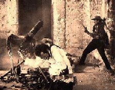

|
The
Wild Bunch
review by Carrie Gorringe
"I
wouldn't
have it any other way." -- this sentence becomes the rationale for one of the most
famous moments of screen violence on film, as the outlaws in Sam Peckinpah's The Wild
Bunch (1969) prepare to do battle with a corrupt and vicious Mexican general and his
troops. Pike Bishop (Holden), the aging leader of the outlaws, regains a certain degree of
self-respect by uttering this line, precisely because he is, to a great and ironic extent,
responsible for making it necessary to fight the general. Forced onto the run by a bounty
hunter, Deke Thornton (Ryan), a former partner in crime who has been obliged to go after
the Bunch or face a long jail term, Bishop takes the only financial offer available to him
and holds up a train in order to steal American-made guns for the general. Unfortunately,
Pike allowed one of his men, Angel (Sanchez) to short-change the general by providing a
box of guns to Angel's village. Enraged by this deceit (never mind that Bishop had to
insure payment from the general by bringing the guns in gradual allotments while keeping
the rest rigged with a dynamite charge), the general orders Bishop and the other outlaws
to leave -- except for Angel, who is to be tortured. Torn between profit and safety and
loyalty, the Bunch depart. Loyalty wins out, however, and they return to get Angel at the
cost of their own lives.
The world that Bishop's Bunch inhabits is on the eve of the 1911 Mexican Revolution.
Another revolution is about to reach the American West, namely the Industrial Revolution,
which will render Bishop's lifestyle of thievery obsolete. It has been eighteen years
since the historian Frederick Jackson Turner proclaimed the final closing of the American
West, and with it the end of transcontinental expansion. Instead of lawless, disconnected
towns in which an "independent contractor" like Bishop could thrive with
impunity, the West has given way to social order and moral rectitude (at least on the
surface). The telegraph and the temperance movement have come to the West, making the
foreclosure upon Pike's future by providing advance information to ambush the Bunch and
cheat Bishop of his earnings (the Bunch' raid upon a town that opens the film nets them
only bags of washers for their pains), but it also is a precursor to greater public
vigilance of personal behavior. Unable to function in this new milieu, the Bunch flees to
Mexico, only to find themselves having to confront technology yet again in the form of the
general's automobile. The end of the Bunch's way of life is only a matter of time;
Bishop's comments about not having it any other way is saturated with irony, given the
tragic yet salient fact that he and the Bunch have very few options left.
The importance of the American West to the American psyche cannot be overestimated. As
film scholars like Will Wright have indicated, the Western embodies many of the most
cherished beliefs about American culture, among them the triumph of the individual over
nature, personal advancement with minimal interference from government and the putative
purity of the wilderness as contrasted with the so-called vice of the cities. However,
living under such circumstances also means the risk of attack by Native Americans fearing
displacement or from individuals with more force at their disposal. If the mythology of a
given culture is meant to reconcile disparate social impulses, then the underlying impulse
behind the Western film is an attempt to address the American need to acquire personal
socio-economic fulfillment and protection for personal gains while preventing excessive
government interference. The Western myth represents an attempt by individuals to
reconcile themselves with their environment. It is what Thornton and the only surviving
member of the Bunch, Sykes (O' Brien) attempt at film's end, as they head off to continue
their lives as before -- as societal outcasts, but still noble and independent. In an
earlier historical moment than 1969, such an ending would have been plausible to an
audience; one recalls the sardonic comment at the end of John Ford's Stagecoach
(1939) that a newly-formed couple have been "spared the blessings of
civilization." However, in an industrial society dependent upon rationalized behavior
and technology, not to mention a Cold-War atmosphere in which the horrors of technology
were bound up with their ineluctability, there can be no escape from those
"blessings." What was hinted at the beginning of the film is clearly inscribed
and overlaid with melancholy as Thornton and Sykes ride away with the soundtrack playing
an elegiac Mexican ballad as a prelude to their pursuit of nothing in particular. The
impression is that Sykes and Thornton are the unlucky ones precisely because they have
survived; instead of dying nobly for a cause, they will rot in ever-increasing ignominy in
a world which never wanted them and can finally eliminate them by eliminating their
livelihood.
One cannot, of course, discuss The Wild Bunch without discussing its more
violent aspects. It is difficult for us to remember what the impact of films like The
Wild Bunch, and its precursor, Bonnie and Clyde (Arthur Penn, 1967) must
have been like to audiences more accustomed to movies made under the strict controls of
the infamous Production Code, which was enforced most vigorously between 1934 and 1966.
Until 1967, death on film -- at least in America -- was neat and tidy; criminals merely
groaned and fell over dead after being shot, with bloodstains seeming to be an
afterthought. All newsreel footage of war had been censored, either by "cameramen's
agreement" or in the editing booth, and television continued in this visual
reticence. Bonnie and Clyde showed the horrifying spectacle of bodies
"dancing" as they were being filled with lead. The Wild Bunch
demonstrated an even more horrible fact: bodies could -- and did -- fly apart under the
impact of multiple bullets. Some have accused Peckinpah of glorifying violence by using
slow-motion and long takes to capture it, allowing the eye to linger over the victims as
their bodies pirouette in obvious agony to the ground, spurting blood and chunks of flesh
(the cinematic style has been rightfully compared to a rather perverse form of ballet).
However, this method of capturing violence on film seems to be less of a glorification of
violence than it is a means of conveying exactly what it must be like for individuals who
find themselves in the middle of a war-like situation. Under the circumstances, with
autonomic nervous systems kicking in and the deluge of adrenaline and fear, any individual
would probably perceive the violence unfolding in front of him or her in slow motion.
Every detail would be exaggerated because perception would be heightened.
The Wild Bunch is indisputably one of the best films ever made. It flawlessly
sums up the contradictions within American society at that time, as old traditions crumble
and leave both liberating possibilities and frightening confusion in their wake. Not least
of all, it is a beautifully-crafted film. Peckinpah never overplays his hand in terms of
unfolding the drama in front of the audience; he knows exactly how to extend scenes when
necessary and when to minimize the number of shots. Lucien Ballard's cinematography is a
literal how-to manual; the sunsets are so exquisitely presented that at times you forget
to breathe. The soundtrack, newly re-recorded in digital sound, is amazing, if sometimes
overwhelming. Most of all, The Wild Bunch is arguably the best film Peckinpah
ever made, because, unlike in his earlier work and, unfortunately, in much of his later
work, there is a sense of absolutely flawless synergy, as if Peckinpah had been completely
unencumbered in the process of placing his vision of the West on film (in contrast, his
most notable earlier film, Ride the High Country (1962); despite wonderful
performances from Joel McCrea and Randolph Scott, has an inhibited feel to it). At turns
profane, but always brilliant, The Wild Bunch is a film worth seeing.
|
[Shared Documents/General/Website/mediabar/mb.html]
|